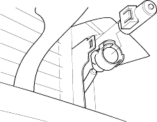
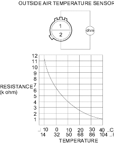

- Release the lock and remove the outside air temperature sensor, then disconnect the 2P connector.

- Install the sensor in the reverse order of removal.
Dip the sensor in ice water and measure the resistance. Then pour hot water on the sensor and check for a change in resistance.
Compare the resistance reading between the No. 1 and No. 2 terminals of the outside air temperature sensor with the specifications shown in the graph; the resistance should be within the specifications.
